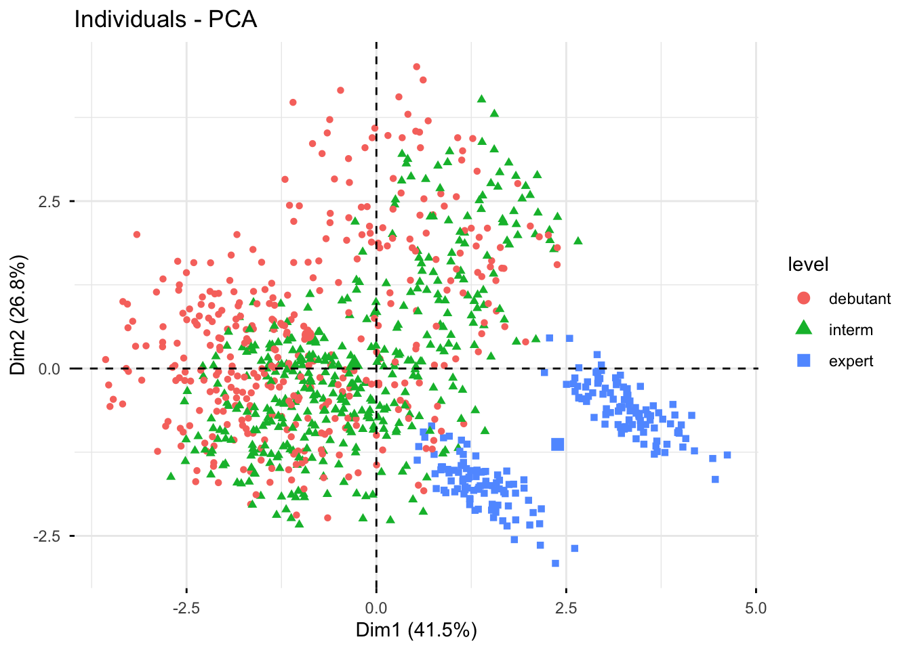
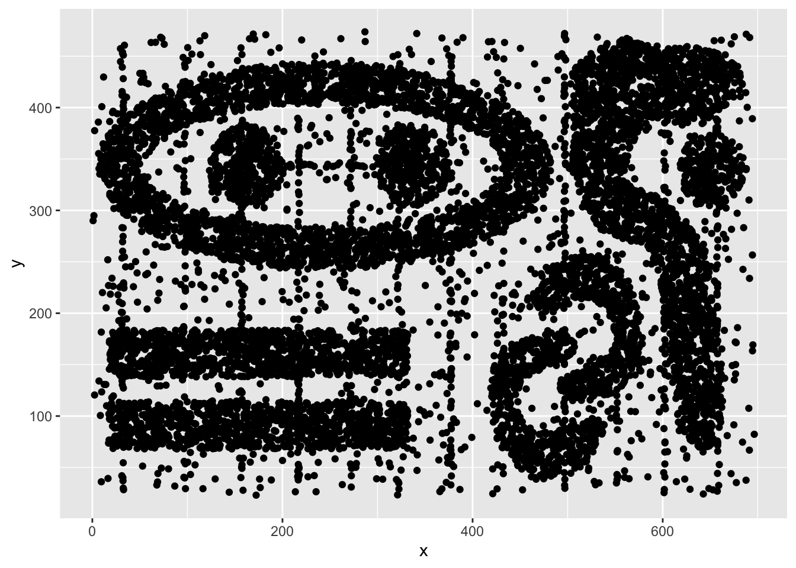

library(mclust)
library(clusterSim)
library(factoextra)
library(FactoMineR)
library(ggplot2)
library(reshape2)
library(circlize)
library(ggalluvial)
library(viridis)
library(dbscan)
library(seriation)TP5 : Clustering - DBSCAN et CAH
L’objectif de ce TP est d’illustrer les notions abordées pour la classification hiérarchique et la méthode DBSCAN. Les librairies R nécessaires pour ce TP :
1 Clustering hiérarchique
On reprend dans ce TP les données DataGym3MIC disponibles sur la page moodle du cours. On charge ici les données et on centre-réduit les variables quantitatives (toutes les variables sauf gender et level).
gym<-read.table("DataGym3MIC.txt",header=T)
gym$gender = as.factor(gym$gender)
gym$level = factor(gym$level, labels = c("debutant", "interm", "expert"))
gyminit<-gym
gym[,-c(1,8)]<-scale(gym[,-c(1,8)],center=T,scale=T)
head(gym) gender weight height duration calories fat water
1 Male 0.68114221 -0.09849406 1.2639483 1.49492124 -1.9773038 1.4552185
2 Female 0.04929028 -1.50782814 0.1270330 -0.08224134 1.4255680 -0.8774464
3 Female -0.27135099 -0.48997575 -0.4268488 -0.83781226 1.3456884 -0.5442086
4 Male -0.97393261 -0.17679039 -1.9427358 -1.36964616 0.6107959 -0.8774464
5 Male -1.30871982 0.52787664 -1.7969775 -1.28161848 0.6746996 0.2888860
6 Female -0.74759759 -0.33338307 0.9724315 0.77236071 -1.5140020 0.1222671
level bmi
1 expert 0.79387004
2 interm 1.06410462
3 interm -0.03034546
4 debutant -0.97616652
5 debutant -1.57969043
6 expert -0.65488762On fait une ACP pour la visualisation des résultats dans la suite
resacp<-PCA(gym,quali.sup=c(1,8), scale.unit = TRUE,graph=FALSE)
fviz_pca_ind(resacp,geom=c("point"),habillage=8)
Question : A l’aide de la fonction hclust(), faites une classification hiérarchique des membres de la salle de sport avec les mesures d’agrégation single, complete et average respectivement. Comparez visuellement les dendrogrammes associés. Commentez.
# A COMPLETER
hclustsingle<-hclust(...)
hclustcomplete<-hclust(...)
hclustaverage<-hclust(...)
# Dendrogramme
plot(hclustsingle,hang=-1,labels=FALSE)
...
fviz_dend(hclustsingle,show_labels=FALSE)
...Question : Déduisez du dendrogramme avec la mesure d’agrégation complete une classification en 3 classes. Vous pouvez utiliser la fonction cutree(). Comparez-la avec les variables gender et level. Commentez.
# A COMPLETERQuestion : Tracez la distribution des variables quantitatives de gym en fonction de la classification en 3 classes de la question précédente. Commentez.
df<-data.frame(gym[,-c(1,8)],Class=as.factor(ClassK3))
df<-melt(df,id="Class")
ggplot(df,aes(x=variable,y=value))+
geom_violin(aes(fill=Class))Question : Dans cette question et pour les suivantes, on se focalise sur la mesure d’agrégation de Ward. Ajustez une classification hiérarchique avec la mesure de Ward. Que représentent les hauteurs du dendrogramme dans ce cas ?
# A COMPLETER
hward<-hclust(...)
fviz_dend(hward,show_labels=FALSE)Question : Déterminez le nombre de classes à retenir avec l’indice de Calinski-Harabasz. Vous pouvez vous aider de la fonction ìndex.G1() de la librairie clusterSim. Tracez la classification obtenue sur le dendrogramme et sur le premier plan factoriel de l’ACP.
# A completer
CH<-NULL
Kmax<-20
for (k in 2:Kmax){
CH<-c(CH,index.G1(x=..., cl=....))
}
daux<-data.frame(NbClust=2:Kmax,CH=CH)
ggplot(daux,aes(x=NbClust,y=CH))+
geom_line()+
geom_point()
ClustCH<-cutree(hward,k=....)
fviz_dend(....)
fviz_pca_ind(....)Question : Comparez la classification obtenue avec la méthode des Kmeans dans le TP4 et celle obtenue à la question précédente.
# A completer
reskmeans<-kmeans(....)
...2 DBSCAN
Dans cette partie, on considère les données simulées chameleon_ds7 disponibles dans la librairie seriation.
library(seriation)
data(Chameleon)
ggplot(chameleon_ds7,aes(x=x,y=y))+
geom_point()
2.1 DBSCAN à paramètres fixés
Question : Dans un premier temps, utilisez l’algorithme DBSCAN avec les paramètres minPts=25 et eps= 15 à l’aide de la fonction dbscan() de la librairie dbscan. Quels sont les effectifs par classe ? Combien d’individus ne sont pas classés ?
# A COMPLETER
minPts<-25
eps<-15
res.db <- dbscan::dbscan(...)
table(...)fviz_cluster(res.db, chameleon_ds7, geom="point",ellipse="FALSE")+
theme(legend.position="none")+
xlab("")+
ylab("")+
ggtitle("Avec DBSCAN")2.2 Influence des paramètres de DBSCAN
Question : Pour étudier l’influence des paramètres minPts et eps, évaluez le nombre de classes obtenues et le nombre d’individus non classés pour différentes valeurs de ces paramètres. Faites varier minPts dans \(\{5,10,15,20,25,30,35,40\}\) et eps dans \(\{5,6,\ldots,20\}\).
minPts <- ...
eps <- ...
NBCluster <- matrix(0,nrow=length(minPts),ncol=length(eps))
NBNonCl <-matrix(0,nrow=length(minPts),ncol=length(eps))
for (i in 1:length(minPts)){
for (j in 1:length(eps)){
res<-dbscan::dbscan(chameleon_ds7, eps=eps[j], minPts=minPts[i])
NBCluster[i,j] <- ...
NBNonCl[i,j] <- ...
}
}
df<-data.frame(eps=rep(eps,each=length(minPts)),
minPts=as.factor(rep(minPts,length(eps))),
NBCluster=c(NBCluster),
NBNonCl=c(NBNonCl)*100/nrow(chameleon_ds7))
ggplot(df,aes(x=eps,y=NBCluster,col=minPts))+
geom_point()+
geom_line()
ggplot(df,aes(x=eps,y=NBNonCl,col=minPts))+
geom_point()+
geom_line()Question : Pour une valeur de minPts=30, déterminez à l’aide de la question précédente la valeur de eps qui permet d’avoir un clustering en \(9\) classes. Vérifiez ce clustering sur le nuage de points.
# A COMPLETERQuestion : Pour une valeur de minPts=30, tracez le graphe de distance kNN afin de choisir le paramètre eps. Vous pouvez utiliser la fonction kNNdistplot(). Qu’en pensez-vous ? Etudiez le clustering obtenu.
# A COMPLETER2.3 Comparaison avec Kmeans
Question : Mettez en place une stratégie de classification de ces données avec les Kmeans. Comparez les résultats. Retrouvez les grandes caractéristiques de ces deux méthodes.
# A COMPLETER